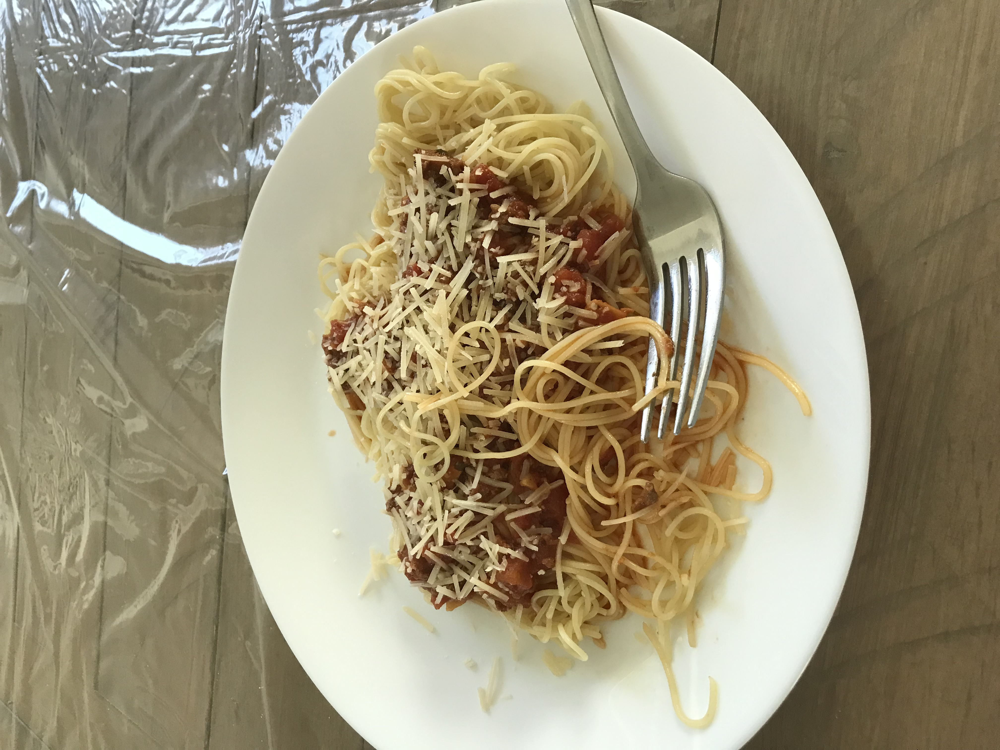

Simple Tomato Pasta

Description
This delicious tomato pasta makes the perfect week night dinner for busy families. It is easy to make and comes together in less than 20 minutes. The light tomato flavor is perfectly complemented by the hint of balsamic, making this dinner picky-eater friendly while still appealing to the adults.
Ingredients
- 1 tablespoon olive oil
- 1 onion, diced
- 6 cloves of garlic, minced
- 1 15 oz can of petite diced tomatoes
- 1 15 oz can of crushed tomatoes
- 1 teaspoon dried basil
- 1 teaspoon dried oregano
- 1 bay leaf
- 1/2 teaspoon dried parsley
- salt and pepper to taste
- 1 tablespoon balsamic vinegar
Instructions
- In a saucepan, sauté the onion and garlic in olive oil until the onion turns translucent.
- Boil a separate pot of water for the pasta.
- To the saucepan, add the tomatoes, basil, oregano, bay leaf, parsley, salt, and pepper, and bring to a simmer.
- Add the pasta to the boiling water and cook according to the package directions.
- Cover the sauce and simmer until the pasta is done.
- After the sauce has finished simmering, remove from heat and stir in the balsamic vinegar.